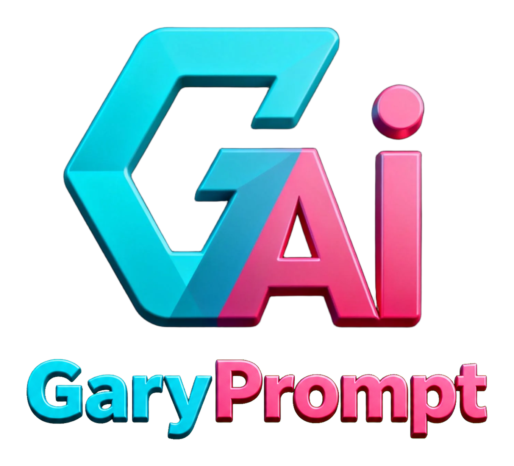

AI VIDEO PROMPT SIDEBAR
把一个想法，变成可直接生成的视频提示词。
在网页侧边栏中选择 Seedance 2.0/2.5、MiniMax H3 或自定义 Skill，完成提示词生成、图像反推、视频解析和 H3 格式转换。
专业 Skills按用途和模型选择创作方法
图像反推只输出干净的专业图像提示词
视频解析均匀抽帧并导出表格或文档
自带 APIKey 和历史保存在浏览器本地
Edge / Chrome / Chromium 手动安装
- 下载 ZIP 并解压到一个固定文件夹。
- Edge 打开
edge://extensions/；Chrome 打开chrome://extensions/。 - 开启“开发人员模式”或“开发者模式”，点击“加载解压缩的扩展”。
- 选择刚才解压、包含
manifest.json的文件夹。
使用支持
安装、API 配置或功能使用遇到问题，可通过 dream3d.vip 联系作者。请勿发送真实 API Key；问题排查时只需提供服务商、模型、错误提示和插件版本。